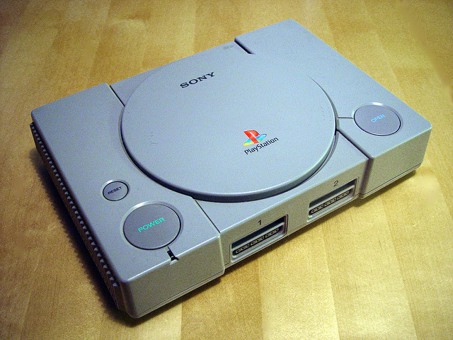
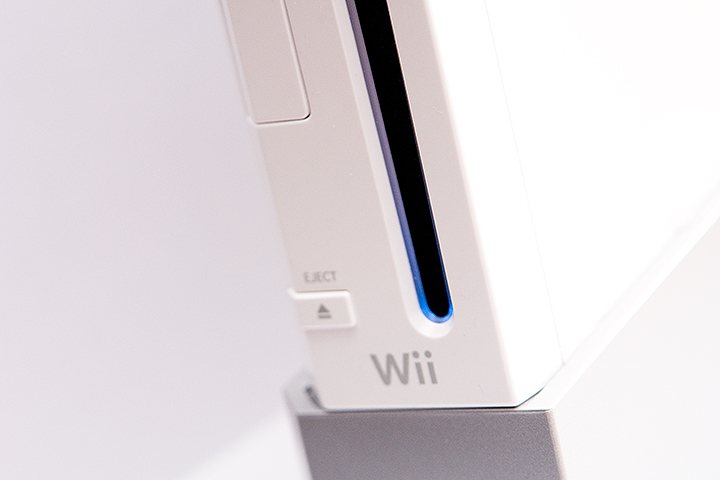
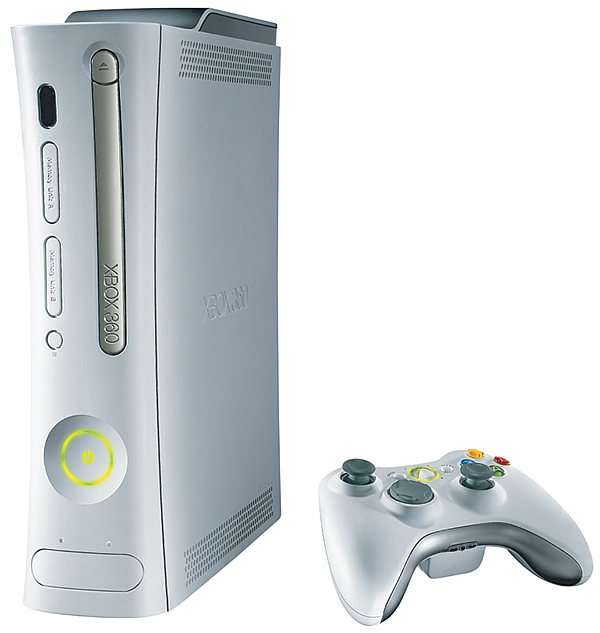

Ingeniería en Sistemas
La ingeniería de sistemas es una rama interdisciplinaria de la ingeniería que permite estudiar y comprender la realidad, con el propósito de implementar u optimizar sistemas complejos. Puede también verse como la aplicación tecnológica de la teoría de sistemas a los esfuerzos de la ingeniería, adoptando en todo este trabajo el paradigma sistémico. La ingeniería de sistemas integra otras disciplinas y grupos de especialidad en un esfuerzo de equipo, formando un proceso de desarrollo centrado.
Los videojuegos son juegos electrónicos que se desenvuelven en un ordenador o en una videoconsola. El juego es creado en forma de programa informático que es grabado en algún medio de almacenamiento como lo pueden ser discos duros, CDs, o cartuchos especiales. Los videojuegos se hicieron populares a partir de los años 70 y dieron lugar a una importante rama dentro de la industria de la informática y los Gráficos por computadora.
Hasta 2020, ha habido varios juegos que han disfrutado de una popularidad sin precedentes. A continuación, os traemos la lista con los juegos más jugados según el número máximo de jugadores concurrentes.
¿Cuáles son los juegos más jugados hasta la fecha en todo el mundo? Desde luego, es una pregunta sumamente interesante y que ayuda a entender mejor los movimientos dentro del sector. Twinfinite ha elaborado una lista teniendo en cuenta los jugadores concurrentes y han surgido diez títulos de sobra conocidos por todos.
Fortnite, League of Legends, Crossfire, Minecraft, Apex Legends, Counter-Strike, PUBG, Dota 2, Grand Theft Auto V y Destiny 2
Los ingenieros de sistemas diseñan, desarrollan y mejoran sistemas de ingeniería. Trabajan en el sistema completo y pueden estar implicados en todos los aspectos del diseño, desarrollo, integración, fabricación y marketing.
Necesitan unos amplios conocimientos de ingeniería y deben ser capaces de guiar el desarrollo del sistema por todas sus fases.
Los Videojuegos
Consolas más usadas en videojuegos
|  |  |  |
 |  |